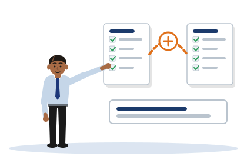
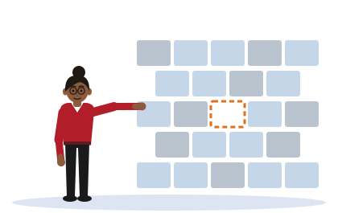
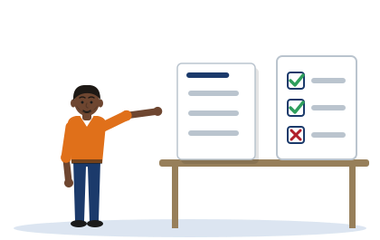

Session 2 notes
Critical Literature Review
These are the notes for Session 2. They show you how to find and judge sources, how to argue with them instead of listing them, and how to name the gap that your project will fill.
- where strong sources in this field come from, and how to judge a source before you read it
- the difference between describing a source and engaging with it
- four moves that turn a list of sources into an argument
- what a research gap is, and the three types of gap
- how to reference conference papers, RFCs and NIST publications in APA7
[Illustrative example - do not cite]
Three invented students appear in Session 2: Tharindu, Chathura and Dilini. You met them in Session 1. None of them is real, and neither are their projects.
The authors that their example paragraphs cite, such as Perera, Silva and Fernando, are invented too, with invented dates and findings. Never cite them.
Two documents in Section 5 are real, and you can look them up: RFC 8446 and NIST SP 800-207.
The plain text on this page is the Session 2 student notes, word for word. It is the same text as the notes document you receive in class.
The coloured boxes are extra help. They give a short summary in plain English, explain the pictures and phrases the notes use, and let you test yourself.
If a box and the notes ever seem to disagree, follow the notes and tell your lecturer.
1. Why This Session Matters
Session 1 asked you for a sharp research question. This session asks what other people have already written about your problem.
The part of your proposal that answers this is the literature review. A weak review lists what each source says. A strong review argues with the sources.
The notes say that this is the Session 1 skill again. You can only argue with what has been written if you have a sharp question to hold it against.
Words you will meet in this section
| Word | What it means |
|---|---|
| Literature | Everything already published about a subject: papers, standards and technical guidance. It does not mean novels or poems here. |
| Literature review | The chapter of your proposal that discusses what has already been published about your problem. |
| Descriptive | Only reporting what something says, without judging or comparing it. |
| Interrogate | To question something closely, and to keep asking until you have an answer. |
| Gap | Something specific that the published work has not yet done. Section 4 explains it. |
| Touch-point | One of the planned moments when you meet the module. Here it means a taught session. |
The literature review is the framing weakness made visible as a writing habit. In Session 1, the cohort weakness showed up as a vague research question. In Session 2 it shows up as a descriptive review: listing sources ("Perera did X, then Silva did Y") instead of arguing with them. The two are causally linked. You cannot interrogate the literature if you do not have a sharp problem to interrogate it for. A descriptive review is the symptom; an unframed problem is the cause.
- the symptom and the cause
- The picture: A person has a fever. The fever is what you can see. An infection, which you cannot see, produces it.
- Why it works: A symptom is the sign, and a cause is what produces the sign. A review that only lists sources is the sign. The cause is a problem that has not been framed: with no sharp question, you have nothing to test each source against, so you can only report it.
- Where it stops working: A doctor can sometimes treat a symptom alone, and the patient feels better. That does not work here. If you polish the sentences of a descriptive review and leave the question vague, the review stays descriptive.
- interrogate the literature
- The picture: An investigator questions a witness, and does not accept the first answer.
- Why it works: You do the same with a paper. You do not only record what it says. You ask where it was tested, what it was compared with, and whether its result holds for your own problem.
- Where it stops working: A witness can answer back, and a paper cannot. You answer your own questions by reading closely and by comparing the paper with other papers. And an investigator may be hostile. You are not: you question a source to learn what it can support, not to defeat it.
Session 2 is not a new skill. It is the Session 1 framing muscle under load. The session title for this touch-point in the teaching plan is "framing against the known", and that is exactly what the literature review asks you to do. You can only name a gap if your question is sharp enough to measure the literature against. The gap is the proof that your question is framed - and the review is the argument that produces it.
- the framing muscle under load
- The picture: In a gym, "under load" means lifting with weight on the bar. A movement that is easy with an empty bar becomes hard.
- Why it works: Session 1 called framing a muscle and gave you a first rep (Session 1 notes, Section 1). The literature is the weight. Holding your question steady is harder when a hundred papers pull it in different directions.
- Where it stops working: In a gym the load is chosen for you, a little more each week. The literature is not graded like that. Its size depends on your topic, which is one more reason to keep the topic small.
- framing against the known
- The picture: A new piece is held against a finished map, to see where it fits and where the map has nothing.
- Why it works: To frame against the known is to compare your question with what is already published. Where the published work covers your question, you build on it. Where it does not, you have found your gap.
- Where it stops working: A map looks complete and settled. The literature is neither: sources disagree, and new ones appear each month. "The known" always means what you have found and read so far.
This session feeds directly into the Week 8 proposal draft. The literature review chapter of that draft is what you are building the skills for today. Arrive at Week 8 with a review that groups sources, names a typed gap, and wires it back to your research question.
- wires it back to your research question
- The picture: A lamp gives light only when a wire connects it to the supply.
- Why it works: A gap that is not connected to your question does no work in the proposal. Section 3 explains this picture in full, under the fourth move.
- Where it stops working: See the box in Section 3 for where the picture stops working.
Week 8 is the draft checkpoint. You submit a full draft of the proposal, and the literature review is one of its chapters. The module map shows where the checkpoint sits in the term.
Check yourself
The notes say that a descriptive review and a vague question are "causally linked". Which one causes the other?
The vague question causes the descriptive review. The notes say: a descriptive review is the symptom, and an unframed problem is the cause. With no sharp question you have nothing to measure a source against, so all you can do is report it.
A student says: "My question is still vague, but I will write the literature review first and sharpen the question afterwards." What do the notes say to this?
That it will not work well. The notes say that you can only name a gap if your question is sharp enough to measure the literature against. Reading does help you to sharpen a question, so the two grow together. But a review written with no question becomes a list.
2. Finding and Judging Sources
Sources are not all equally strong. This section tells you where the strong sources in this field are published.
It then gives you a quick test, called triage, to judge a source before you spend time reading it closely.
The test has three results: strong, use with care, and weak.
Words you will meet in this section
| Word | What it means |
|---|---|
| Peer-reviewed | Checked by other researchers in the same field before it is published. |
| Venue | The place where research is published: a named conference or a journal. |
| Primary source | The original document: the paper that reports the research, or the standard itself. |
| Tertiary source | A summary of summaries, such as an encyclopaedia. It is two steps away from the original work. |
| RFC | Request for Comments. The official document that defines an internet protocol. Each one has a number. |
| Standards body | An organisation that publishes agreed technical rules and guidance, such as NIST. |
| Currency | How recent a source is. The word has nothing to do with money here. |
| State of the art | The best that is known or possible at present. |
| Vendor | A company that sells a product. Here: a security company. |
| Promotional | Written to make people want a product. |
| Unvetted | Not checked by anyone before it was published. |
| Triage | A quick sorting by a fixed test, done before the real work starts. The box below explains where the word comes from. |
2.1 The Source Landscape
Strong academic and technical sources in cybersecurity and network engineering fall into several categories. The following are the primary venues and bodies your literature review should draw from:
- Peer-reviewed security conferences: IEEE Symposium on Security and Privacy (S&P), USENIX Security, ACM Conference on Computer and Communications Security (CCS), Network and Distributed System Security Symposium (NDSS). These are the most selective and respected venues in the field. A paper from one of these is primary, peer-reviewed research.
- IETF Request for Comments (RFCs): the definitive specification for network protocols. When your project involves TLS, DNS, BGP, HTTP/2, or OAuth, the relevant RFC is your primary specification source. Always cite the specific RFC number.
- NIST Special Publications (SPs): authoritative technical guidance from the National Institute of Standards and Technology. For example, SP 800-207 (Zero Trust Architecture) and SP 800-115 (Technical Guide to Information Security Testing). These are standards-body primary sources.
- UK National Cyber Security Centre (NCSC): technical guidance, advisories, and publications from the UK national body. Strong for UK-specific regulatory and operational context.
- OWASP (Open Web Application Security Project): application security testing guides (OWASP Testing Guide, OWASP WSTG), the OWASP Top 10, and project-specific standards. Particularly relevant for web application and API security projects.
| Where it is published | In plain words | What you cite it for |
|---|---|---|
| Security conferences (S&P, USENIX Security, CCS, NDSS) | New research, checked by other researchers before it is published. | What researchers have found. |
| IETF RFCs | The official definition of a network protocol. | What a protocol is and how it must behave. |
| NIST Special Publications | Technical guidance from the standards body of the United States. | An authoritative way to design or test a system. |
| NCSC | Guidance from the national cyber security body of the United Kingdom. | Operational and regulatory context in the United Kingdom. |
| OWASP | Testing guides and lists of common weaknesses for web applications and APIs. | How web applications and APIs are tested, and which weaknesses are most common. |
Currency matters: the field moves quickly. In general, prefer sources published within the last five years. A 2009 paper may be appropriate to cite as the origin of an approach, but not as evidence of the current state of the art.
- the field moves quickly
- The picture: A river: the water you saw last year is no longer there.
- Why it works: Attacks and defences change every year. A result from ten years ago may describe systems and attacks that no longer exist in that form.
- Where it stops working: A river replaces all of its water. The field does not replace everything. A protocol defined long ago can still be in use, and an old paper can still be the origin of an idea. Ask what you are citing the source for.
Notice the words "in general". Five years is a guide, not a law, and the notes give the exception themselves: an older paper cited as the origin of an approach.
Age is measured against the claim. An RFC stays the primary specification for its protocol until a later RFC replaces it, however old it is. So for an RFC the useful question is not "how old is it?" but "has it been replaced?". The RFC Editor page for each RFC tells you.
2.2 Source Triage: Judge Before You Cite
Not everything you find is worth citing. Apply this triage test to every source before you invest time reading it deeply:
After you have read the three lists below, test the idea that a source is judged against its use. In Source for the Claim the same source appears twice, and the answer changes.
Strong - cite with confidence:
Peer-reviewed paper from USENIX Security, IEEE S&P, ACM CCS, or NDSS within the last five years - primary, current, highest credibility.
The IETF RFC defining the protocol under study - authoritative primary specification. This is the document the field defers to.
NIST / NCSC / OWASP authoritative guidance publication - standards-body primary source. Highly trusted and citable.
Use with care:
A vendor security blog: useful for real-world threat context and up-to-date threat intelligence, but promotional and not peer-reviewed. Never use for a core analytical claim.
A conference paper older than five years on the same topic: cite for historical origin only, not as evidence of the current state of the art. The field has moved.
Weak - do not cite as academic evidence:
An encyclopaedia entry (including Wikipedia): tertiary source. Use it to orient yourself, then find and cite the primary source it points to.
A personal blog tutorial or a Q&A forum answer (such as Stack Overflow): unvetted and not a citable academic or technical source.
- the document the field defers to
- The picture: In a meeting, people disagree until someone opens the rule book. Then everyone accepts what it says.
- Why it works: To defer to something is to accept its authority. When two descriptions of a protocol disagree, people in the field settle the matter by reading the RFC. That is why the notes call it the primary specification.
- Where it stops working: A rule book says what should happen. An RFC says how a protocol must behave, not how well a real product follows it, and not whether the protocol is secure in your setting. Those are questions for research.
- orient yourself
- The picture: A walker in a new town looks at a map on a wall to see which way is north.
- Why it works: To orient yourself is to find out where you are. An encyclopaedia entry gives you the main terms and the names of the important sources quickly, so that you know where to look next.
- Where it stops working: The walker does not carry the wall map away. You do not carry the encyclopaedia into your reference list. The notes say to find and cite the primary source that it points to.
Check yourself
You find an NDSS paper from eleven years ago that first proposed the technique you want to use. May you cite it?
Yes, for one purpose. The notes say that an older paper may be cited as the origin of an approach, but not as evidence of the current state of the art. So cite it for where the idea began, and cite recent work for how well the idea performs today.
A security company's blog reports a new wave of attacks, with figures. How may you use it?
With care. The notes say that a vendor blog is useful for real-world threat context, but that it is promotional and not peer-reviewed. You may use it to show that the threat exists. You may never use it for a core analytical claim.
Why do the notes call an encyclopaedia entry a tertiary source, and what should you do with one?
Because it summarises other summaries, so it is far from the original work. The notes say to use it to orient yourself, and then to find and cite the primary source that it points to.
3. Describe vs Engage

This is the central section of the session.
To describe a source is to report what it says. To engage with a source is to compare it, judge it and connect it to your own question.
The notes give four moves that turn describing into engaging. They then show the same sources written both ways, twice.
The section ends with a weak paragraph for you to judge.
Words you will meet in this section
| Word | What it means |
|---|---|
| Engage | To work actively with a source: compare it, judge it and use it for your own question. |
| Criterion 2 | The second heading your proposal is marked against: the quality of your literature review. |
| Band | A range of marks with a name: Fail, Pass, Merit or Distinction. |
| Credential stuffing | An attack that tries stolen usernames and passwords, in large numbers, on a login page. |
| Threshold | A fixed limit. A threshold method acts when a count passes the limit. |
| Rate-limiting | Blocking a sender that makes too many requests in a short time. |
| Classifier | Software that sorts things into classes, such as normal logins and attack logins. |
| Distributed attack | An attack sent from many addresses at once, a little from each. |
| SOC | Security operations centre: the team that watches for attacks and responds to alerts. |
| False positive | An alert raised for something that was not an attack. |
| Churn | To change again and again. A phone often changes its network address and other details. |
| Baseline | The thing you compare against, so that a result has a meaning. |
| Compliance coverage | How many of the required settings have been applied. |
| Exploitability | How far an attack can actually succeed against a system. |
| Diverge | To move apart. Two measures diverge when one is high and the other is low. |
| Spare pair | A second pair of examples, one descriptive and one critical, given as an extra. |
3.1 The Core Distinction
Describing a source reports what it says. Engaging with a source analyses, compares, evaluates, and connects it to your research question. This is the distinction that Criterion 2 is built around, and it is where marks are won or lost.
Criterion 2 marks the quality of your literature review. Section 3.5 of these notes names its four dimensions: critical engagement, the gap, how current and credible the sources are, and APA7.
The notes label the describing example as Pass band, and the engaging example as Merit to Distinction. So a review that only describes can pass, but the higher bands ask you to engage.
- where marks are won or lost
- The picture: A match that is decided in one part of the field.
- Why it works: Most students in a cohort find and cite sources well enough. The difference between the bands comes mainly from one thing: whether the review describes or engages. That is the place to put your effort.
- Where it stops working: A match has one winner. Marking is not a contest between students: everyone who engages can reach the higher bands.
Describing (Pass band):
"Perera (2021) developed a rate-limiting method... Silva and Fernando (2022) proposed a machine-learning classifier... Jayawardena (2023) used device fingerprinting..."
Each sentence reports what one source did. There is no comparison between sources, no evaluation of their relative strengths or weaknesses, and no connection to the research question or the specific context the project operates in.
Engaging (Merit to Distinction band):
"Detection approaches divide broadly into threshold-based and feature-based methods, and the division matters for a SOC that must keep false positives low. Threshold methods such as IP rate-limiting (Perera, 2021) are cheap to deploy but degrade against distributed attacks that stay under per-IP limits..."
Sources are grouped by approach and evaluated against each other. A limitation is named in the specific context of the project. The analysis is heading towards the gap.
- heading towards the gap
- The picture: A walker on a road with one place to reach.
- Why it works: A critical paragraph has a direction. Each sentence takes the reader one step closer to the statement of what is missing. A descriptive paragraph has no direction: its sentences could be put in any order.
- Where it stops working: A road is there before the walker. The path to your gap is not: you build it, by choosing which sources to group and which limitation to name.
3.2 The Four Moves
Four specific moves turn a descriptive review into a critical one:
- Group, do not list: Cluster sources by approach or claim, not by author and date. "Threshold methods (Perera, 2021) and feature-based methods (Silva & Fernando, 2022; Jayawardena, 2023) differ in how they handle distributed traffic" is grouping. "Perera did A, Silva did B, Jayawardena did C" is listing.
- Contrast, do not accumulate: Name how two approaches differ, and say why that difference matters for your specific problem. Not "A and B both exist" but "A fails precisely where B would need to succeed."
- Name a limitation: Where does the approach fail? Specifically, why does it fail in your context? This is the analytical step that earns critical engagement marks. Naming a generic weakness is less valuable than naming one that is specific to your project context.
- Wire back to the question: Every critical paragraph should connect its analysis to the problem you are solving. The limitation you name is the foothold for the gap; the gap is the justification for the question.
| Move | In plain words | A sign of it in a paragraph |
|---|---|---|
| Group, do not list | Put sources that work in the same way together. | One sentence names an approach and cites several sources for it. |
| Contrast, do not accumulate | Say how two approaches differ, and why that matters for your problem. | Words such as but, whereas and while. |
| Name a limitation | Say where an approach fails in your setting. | Words such as degrade, fail and does not measure, followed by your setting. |
| Wire back to the question | Connect what you found to what your project will do. | The words "this project" or "the research question". |
- the foothold for the gap
- The picture: A climber on a rock face puts a foot on a small ledge, and from there can reach higher.
- Why it works: A foothold is a firm place that lets you take the next step. The limitation that you name is that firm place: once the reader accepts that an approach fails in your setting, the step up to "so this has not been done" is short.
- Where it stops working: A climber finds footholds that are already in the rock. You must show yours. A limitation that you only claim, with no source or reasoning behind it, will not hold any weight.
The two worked examples below contain all four moves. Can you point to each one? Try Find the Move before or after you read them.
3.3 Worked Example: Tharindu's Credential-Stuffing Question
[Illustrative example - do not cite] All cited authors, dates, and findings are invented for teaching purposes.
Descriptive version (Pass band):
Several approaches to detecting credential-stuffing have been proposed. Perera (2021) developed a rate-limiting method that blocks IP addresses after a threshold of failed logins. Silva and Fernando (2022) proposed a machine-learning classifier using login-frequency features. Jayawardena (2023) used device fingerprinting to identify suspicious sessions. Each of these studies reports high detection rates. These approaches show that credential-stuffing detection is an active area of research.
Critical version (Distinction band):
Detection approaches for credential-stuffing divide broadly into threshold-based and feature-based methods, and the division matters for a SOC that must keep false positives low. Threshold methods such as IP rate-limiting (Perera, 2021) are cheap to deploy but degrade against distributed attacks that stay under per-IP limits, which is the precise case a mobile-banking endpoint faces. Feature-based classifiers (Silva & Fernando, 2022; Jayawardena, 2023) address distribution by scoring behaviour rather than volume, but both evaluate on web traffic with stable client fingerprints, whereas mobile clients churn device and network identifiers in ways that may inflate false positives. No reviewed study evaluates feature-based detection on mobile-banking authentication specifically, and none reports a false-positive rate against a triage threshold. That absence is the gap this project occupies, and it is what the research question's comparison against a rate-limiting baseline is designed to test.
Named move: from "X did A, Y did B, Z did C" to "these methods split into approaches A and B; A fails in my context, B has limitation L in my context, and nobody has tested either in context C, which is my gap." The structural tells: grouping instead of listing, contrast instead of accumulation, a named limitation, and a gap wired back to the question and its baseline.
- the structural tells
- The picture: In a card game, a player's small habit, such as touching one ear, tells the others what cards the player holds.
- Why it works: A tell is a small sign that shows something larger. A reader can see in a few seconds whether a paragraph engages, from signs in its structure: sources grouped in one sentence, a word of contrast, a named limitation, a mention of the project.
- Where it stops working: A card player tries to hide a tell. You want yours to be seen. And a tell can be faked: a paragraph can contain the word "however" and still compare nothing. The signs point to the thinking. They do not replace it.
Count the sources in Tharindu's two versions. Both cite the same three. The critical version is not better informed. It is better organised.
That is the Level 6 point of this section. The value of a review does not come from how many sources it holds. It comes from the relations that you build between them. Section 3.5 says the same thing in other words: the highest-value edit is structural, not additive.
3.4 Worked Example: Chathura's CIS Hardening Question (Spare Pair)

Chathura. The rack is the system that he hardens, and the shield is the benchmark that he applies.
[Illustrative example - do not cite] All cited authors, dates, and findings are invented for teaching purposes.
Descriptive version:
Several frameworks exist for system hardening. The CIS Benchmarks provide detailed configuration controls. The NIST Cybersecurity Framework offers a risk-based approach. The DISA STIGs provide technical implementation guides for specific systems. These frameworks are widely used in industry for reducing attack surface.
Critical version:
Established hardening frameworks - CIS Benchmarks, NIST CSF, and DISA STIGs - share a common measurement orientation: they assess compliance coverage, counting how many controls have been applied. What none of them measures is exploitability change: the reduction in attack-technique success rate before and after hardening is applied. This distinction matters for a project proposing to evaluate hardening effectiveness, because compliance coverage and exploitability reduction can diverge - a system may satisfy 95% of a benchmark while remaining vulnerable to the specific attack techniques that are most prevalent in the target environment. Chathura's research question fills precisely this evaluation gap by testing attack-technique success rate against a benchmark-hardened versus a baseline system.
Compare this example with Tharindu's. Tharindu divides his sources into two groups and contrasts the groups. Chathura does something different: he puts all three frameworks into one group, by what they share.
His contrast is then between two measures: what all three frameworks measure (how many controls are applied) and what none of them measures (whether attacks still succeed). Grouping can show what a whole body of work has in common, and so what all of it leaves out.
3.5 Discussion Excerpt: Grade This Review
[Illustrative example - do not cite] The authors, dates and findings are invented, and the referencing is deliberately incorrect. Do not copy any part of this excerpt into your own work.
This is the excerpt the group discussion works on in the session. It is written to sit in the Pass band. Read it against all four Criterion 2 dimensions: critical engagement, the gap, source currency and credibility, and APA7. It draws on material from Sections 3, 4 and 5 of these notes.
- written to sit in the Pass band
- The picture: A book placed on one shelf of four.
- Why it works: The bands are like shelves, one above another. This excerpt was written, on purpose, with the faults that keep a review on the Pass shelf, so that you can practise finding them.
- Where it stops working: A book stays where it is put. A paragraph does not: the notes show, just below, the one edit that lifts this paragraph to the next band.
Network intrusion detection has been widely studied. Fernando (2019) proposed a signature-based system for detecting port-scanning activity. Wickramasinghe (2021) developed an anomaly-detection model using network-flow features and reported high accuracy. Perera and Silva (2023) applied deep learning to intrusion detection and also found good results. Guidance on transport security is available from the IETF (Internet Engineering Task Force, n.d., https://www.rfc-editor.org/). Overall these studies show that intrusion detection is an active area of research, and more research is needed in this area.
Four things to look for. First, every source gets its own sentence and no two sources are related to each other, which is listing rather than grouping. Second, "high accuracy" and "good results" are standing in for evaluation: nothing is compared, and no limitation is named. Third, the closing phrase "more research is needed" names no absence and no gap type, which is the Pass-band failure described in Section 4. Fourth, one reference is in the wrong form entirely: the IETF is cited as an undated bare webpage, which is error 1 in Section 5.2, and the correct form for that document is given in Section 5.1.
The single highest-value edit is structural, not additive. Grouping the signature-based approach against the flow-feature and deep-learning approaches, then naming what none of them measures in the target context, converts the closing filler into a typed gap and lifts the paragraph a band. Adding more sources does not.
- structural, not additive
- The picture: A house with weak walls. Adding another room does not make it stand. Rebuilding the frame does.
- Why it works: An additive edit puts more in: another source, another sentence. A structural edit changes how the parts are arranged: which sources stand together, and what they are compared with. The notes say that the second kind lifts the band.
- Where it stops working: A house frame is fixed once it is built. A paragraph is cheap to rebuild, so try more than one grouping before you decide.
- the closing filler
- The picture: Packing paper pushed into a box to fill the empty space.
- Why it works: Filler takes up room and carries nothing. "More research is needed" could end any review on any subject, so it tells the reader nothing about this one.
- Where it stops working: Packing paper at least protects what is in the box. A filler sentence protects nothing, and it uses the place where your gap should stand.
Paste the excerpt above into the Critical Mirror and read what it reports. Then paste Tharindu's critical version and compare the two readings.
Check yourself
A paragraph reads: "Perera did A. Silva did B. Jayawardena did C." Which of the four moves does it need first?
Group, do not list. Each source has its own sentence and no source is related to another. Until the sources are put into groups by approach, there is nothing to contrast, so the other moves cannot begin.
Tharindu's descriptive version and his critical version cite the same three sources. What, then, is the difference between them?
Structure. The critical version groups the sources into threshold methods and feature-based methods, says where each fails for a mobile-banking login, names what no study has done, and connects that to the research question. No source was added.
In the excerpt in Section 3.5, one study "reported high accuracy". Why do the notes say that this is not evaluation?
Because nothing is compared and no limitation is named. "High" compared with what, on which data, and in which setting? To evaluate is to judge against something. The excerpt only repeats what the study said about itself.
A student wants to lift a Pass-band paragraph and plans to add four more sources. What do the notes advise?
Not to. The notes say that the single highest-value edit is structural, not additive, and that adding more sources does not lift the paragraph. Grouping the sources already there, and naming what none of them measures, does.
4. Finding and Justifying the Gap

A gap is something specific that the published work has not done.
This section shows what counts as a gap and what does not. It names three types of gap.
It then shows that your gap and your research question belong together. If both are framed well, you can say them in one sentence.
Words you will meet in this section
| Word | What it means |
|---|---|
| Gap statement | The sentence in your review that says exactly what is missing from the published work. |
| Characterised | Described exactly, with its type named. |
| Absence | The fact that something is not there. |
| Methodology | A structured way of doing a job, step by step. |
| Context | The setting in which something is used or tested. |
| Evaluation | Measuring how well something works. |
| Threat model | A clear statement of who the attacker is and what the attacker can do. |
| Rigorously | Carefully and completely, in a way that others can check. |
| Object-level authorisation | The check that a user may open this particular record, and not only that the user is logged in. |
| FHIR | A standard for exchanging health records between systems. A FHIR-style API follows its pattern. |
| Taxonomy | An ordered list of types. A taxonomy-driven method works through the list, type by type. |
| Seeded flaw | A weakness placed in a test system on purpose, so that a test has a known right answer. It is not the same as seeding, the first stage of your project (Session 1 notes, Section 3). |
| Tooling | The software tools used to do a job. |
4.1 What a Gap Is - and Is Not
"More research is needed" is not a gap statement. It names nothing. A gap is a specific, characterised absence in the literature that your project is designed to fill. It follows logically from the review: you show the hole is there, and then you claim it is the right shape for your project.
4.2 Gap Types
Naming the type of gap is what lifts a statement from Merit to Distinction:
- Methodology gap: no one has applied method M to problem P in this form. The approach exists; the application does not.
- Context gap: method M has been studied but not in context C - for example, not on mobile clients, not in healthcare systems, not against a specific threat model.
- Evaluation gap: studies exist but none measure outcome O rigorously - for example, none reports a false-positive rate against a triage threshold, or none tests against a meaningful baseline.
| Gap type | In plain words | Where you see it in these notes |
|---|---|---|
| Methodology gap | The method exists, but nobody has used it on this problem in this form. | Dilini: no structured method aimed at this kind of flaw in this kind of API. |
| Context gap | The method has been studied, but not in your setting. | Tharindu: no study on mobile-banking authentication. |
| Evaluation gap | Studies exist, but nobody has measured the outcome that matters. | Tharindu: no false-positive rate against a threshold. Chathura: nobody measures whether attacks still succeed. |
One sentence can hold two gaps. Look at Tharindu's gap sentence in Section 4.4. Its first half names a context gap (not on mobile-banking authentication), and its second half names an evaluation gap (no false-positive rate against a threshold).
That is honest only because his review supports both halves. Each gap that you claim needs its own evidence from the review. One gap that you can defend is worth more than three that you only state.
4.3 Worked Gap Statement: Dilini's Healthcare API Project
[Illustrative example - do not cite] All described literature characteristics are invented for teaching purposes.
The literature establishes:
The literature on API security testing establishes that broken object-level authorisation is consistently ranked among the most prevalent and damaging API weaknesses, and that automated scanners detect injection and authentication flaws well but detect authorisation flaws poorly, because authorisation is context-specific rather than pattern-based.
What is absent:
Structured testing methodologies exist for web applications generally, but the reviewed literature offers no repeatable, taxonomy-driven methodology aimed specifically at object-level authorisation in healthcare FHIR-style APIs, where the protected object is a patient record and the access rules are clinical.
The gap - and its type:
The gap is therefore a methodology gap, not a tooling gap. The research question follows directly from it, asking whether a structured object-level-authorisation methodology detects a higher proportion of seeded flaws than unstructured manual testing in a controlled FHIR-style API.
Why does Dilini say what the gap is not? A tooling gap would mean: no scanner finds these flaws, so build a better scanner. But her review found the reason that scanners fail: authorisation depends on context, and a scanner looks for patterns. A better scanner would fail in the same way.
So what is missing is a structured way to test, and her question tests exactly that. Naming the type of the gap does real work: it rules out the wrong project.
Dilini's question counts seeded flaws. Session 3, in Week 6, shows how an evaluation is designed, and why planting known flaws in a test system gives a test a right answer to be measured against.
Teaching point: "methodology gap, not a tooling gap" is the phrase that separates a Merit statement from a Distinction one. Precision about the type of absence is the Distinction move.
4.4 The Gap and the Question Are Two Ends of One Sentence
If your gap and your research question are correctly framed, you should be able to connect them in a single sentence:
See how the type of a gap decides what the question must test, and then write your own sentence, in Two Ends of One Sentence.
"No reviewed study evaluates feature-based detection on mobile-banking authentication specifically, and none reports a false-positive rate against a triage threshold [gap] ... which is what this project tests by comparing a feature-based classifier against a rate-limiting baseline." [question]
If you can write this sentence, your framing is working. If you cannot, return to Session 1: the question is not yet sharp enough.
If you cannot write the sentence, the notes send you back to Session 1. That is not a failure. Reading the literature often shows that a question was aimed at something already done, or at something that nobody needs. Moving the question a little, so that it meets a real gap, is the normal work of research.
The five properties of a question are in Session 1 notes, Section 4.
Check yourself
Why is "more research is needed" not a gap statement?
Because it names nothing. The notes say that a gap is a specific, characterised absence that your project is designed to fill. "More research is needed" could be written at the end of any review on any subject, so it shows no hole and no shape.
A student writes: "Method M has been tested on web traffic, but not on mobile clients." Which type of gap is this?
A context gap. The method has been studied, but not in this setting. The notes give "not on mobile clients" as one of their own examples of a context gap.
Dilini says that her gap is a methodology gap, "not a tooling gap". What does the second half of that phrase add?
It rules out the wrong project. A tooling gap would call for a better scanner. Her review shows that scanners detect authorisation flaws poorly because authorisation is context-specific, so the missing thing is a structured way to test. The notes call this precision the Distinction move.
5. APA7 for This Domain

APA7 is the referencing style that this module uses. A reference tells your reader exactly which document you used, so that the reader can find it.
Every reference answers four questions: who wrote it, when, what it is called, and where it can be found.
Three kinds of source in this field are often referenced wrongly: conference papers, RFCs and NIST publications. This section shows the wrong form and the right form of each, and then five common errors.
Words you will meet in this section
| Word | What it means |
|---|---|
| APA7 | The seventh edition of the referencing style of the American Psychological Association. |
| Reference | The full details of a source, in the list at the end of your work. |
| Citation | The short pointer inside your sentence, such as (Rescorla, 2018). It leads the reader to the full reference. |
| Proceedings | The published collection of the papers presented at one conference. |
| Volume and issue | The numbers that say which year and which part of a journal an article is in. |
| DOI | Digital Object Identifier: a permanent link to a document. It stays the same if the website changes. |
| n.d. | Short for "no date". It is used in a reference when a source gives no date. |
| Issuing body | The organisation that publishes a document, such as NIST. |
| Second-hand citation | Citing a source that you have not read yourself, because another author quoted it. |
5.1 Three Forms to Get Right
Conference paper
Conference papers are NOT journal articles. They are published in Proceedings, not in journals with volumes and issues.
- Wrong: Author, A. (2022). Title of paper. Journal of Security, 14(3), 22-31.
- Right: Author, A. (2022). Title of paper. In Proceedings of the 31st USENIX Security Symposium (pp. 1123-1140). USENIX Association.
IETF RFC
RFCs have authors, dates, and DOIs. They are not anonymous web pages.
- Wrong: Internet Engineering Task Force. (n.d.). TLS 1.3. https://www.rfc-editor.org/...
- Right: Rescorla, E. (2018). The Transport Layer Security (TLS) protocol version 1.3 (RFC 8446). RFC Editor. https://doi.org/10.17487/RFC8446
| Part | The question it answers | In the RFC example |
|---|---|---|
| Who | Who wrote it? | Rescorla, E. |
| When | In which year? | (2018). |
| What | What is it called, and what is its number? | The Transport Layer Security (TLS) protocol version 1.3 (RFC 8446). |
| Where | Who published it, and where can it be found? | RFC Editor. https://doi.org/10.17487/RFC8446 |
NIST Special Publication
NIST Special Publications list named individual authors on the cover page. APA7 prefers those named authors where they are identified, with NIST itself as the issuing body. Not just a URL.
- Wrong: https://csrc.nist.gov/... (or "the NIST website")
- Right: Rose, S., Borchert, O., Mitchell, S., & Connelly, S. (2020). Zero trust architecture (NIST SP 800-207). National Institute of Standards and Technology. https://doi.org/10.6028/NIST.SP.800-207
Build each of the three references part by part in Build the Reference. The wrong choices are the ones that these notes warn about.
5.2 Five Common APA7 Errors
- An RFC cited as a bare webpage: no author, no date, just a URL. Fix: find the RFC number, named author, and year. Cite in full using the RFC form above.
- A conference paper dressed as a journal article: invented volume and issue numbers. Fix: use the Proceedings format with conference name, page range, and publisher.
- NIST or NCSC guidance reduced to a URL: Fix: use the named authors where the document lists them, then year, title, SP number, issuing body, and DOI. See example above.
- An OWASP project with no author, date, or version: Fix: OWASP Foundation. (2021). OWASP Top 10:2021. https://owasp.org/Top10/
- A second-hand citation passed off as first-hand: citing a paper you only saw quoted in another. Fix: read the original, or cite honestly as Author (Year, as cited in OtherAuthor, Year).
- a conference paper dressed as a journal article
- The picture: A person in a costume. From far away you see someone else.
- Why it works: The reference wears the form of another kind of document: a journal name, a volume and an issue. The paper has none of these, so a reader who searches for that volume finds nothing.
- Where it stops working: A costume is put on to deceive. Students rarely mean to deceive here. They copy a form that they know. The result for the reader is the same.
- a bare webpage
- The picture: A wall with nothing on it.
- Why it works: Bare means with nothing added. A reference that is only a web address has no author, no date and no title. If the address changes, the reader has nothing left to search with.
- Where it stops working: A bare wall is still a wall. A bare address is not yet a reference. The document has an author, a date and a number, and you must find them.
- passed off as first-hand
- The picture: Used goods sold as new.
- Why it works: To pass something off is to present it as what it is not. If you cite a paper that you saw only inside another paper, you present someone else's reading as your own. They may have summarised it wrongly, and you would repeat the error under your name.
- Where it stops working: Selling used goods as new is always dishonest. Citing second-hand is not, if you say so. The notes give the honest form: Author (Year, as cited in OtherAuthor, Year).
Why does the form matter beyond the marks for it? Because the form shows that you know what kind of document you are holding.
An RFC cited as a webpage tells your reader that you did not notice it has an author, a number and a place in a series. A conference paper cited as a journal article tells the reader that you did not check where it was published. A marker reads these as signs of how carefully the sources were read, and Section 2 has already said that judging a source starts with knowing where it was published.
Check yourself
Your source is a paper presented at USENIX Security. A reference manager gives it a volume and an issue number. What should you do?
Remove them and use the Proceedings form. The notes say that conference papers are published in Proceedings, not in journals with volumes and issues. The right form gives the name of the Proceedings, the page range and the publisher.
Why is "Internet Engineering Task Force. (n.d.)." wrong for an RFC?
Because an RFC is not an anonymous, undated page. The notes say that RFCs have authors, dates and DOIs. The right form begins with the named author and the year, and gives the RFC number, the RFC Editor and the DOI.
You read about Paper A only inside Paper B. You have not read Paper A. How may you cite it?
In one of two honest ways. Read Paper A and then cite it. Or cite it as the notes show: Author (Year, as cited in OtherAuthor, Year). What you may not do is cite Paper A as if you had read it.
6. Your Next Steps
Before the Week 8 draft, your literature review should pass three tests. Each test is one idea from this session.
The notes also point you to a tool for checking a paragraph, and to two books.
Words you will meet in this section
| Word | What it means |
|---|---|
| Draft checkpoint | The point in Week 8 where you submit a full draft of your proposal for feedback. |
| Self-check | To test your own work before anyone else sees it. |
| Distinction-ready | Built in the way that the highest band asks for. It is not a promise of that mark. |
Before the Week 8 draft checkpoint, your literature review should be able to answer three questions:
- Does it group sources by approach rather than listing them author by author?
- Does it name a specific gap with a gap type (methodology / context / evaluation)?
- Is the gap wired to the research question - are they two ends of one sentence?
Use the Critical-vs-Descriptive Mirror tool (available from the module page) to self-check any paragraph before submitting. Paste a paragraph and it will flag whether you are describing or engaging, and name the single highest-value edit.
On this site the Mirror opens in your browser, with nothing to download: open the Critical Mirror.
- a mirror
- The picture: A person looks into a mirror before leaving the house.
- Why it works: A mirror gives no opinion. It shows you what is there, and you decide what to change. The tool works like that: it shows which signs of describing and of engaging are in your paragraph, and the decision about the edit is yours.
- Where it stops working: A mirror shows everything in front of it. This tool sees only the surface: certain words and patterns. It cannot see whether your comparison is true or whether your gap is real. A paragraph can show every sign and still be wrong.
Arrive at the Week 8 draft with a review that groups, contrasts, names a typed gap, and connects it to the research question. That is a Criterion 2 Distinction-ready review.
Essential reading: For APA7 format, consult the American Psychological Association (2020) Publication manual of the American Psychological Association (7th ed.) and the Purdue OWL APA 7th Edition guide at https://owl.purdue.edu/owl/research_and_citation/apa_style/
For literature review methodology: Dawson, C. (2019). Introduction to research methods (5th ed.). Robinson. Chapter 3 covers literature search strategies.
Check yourself
What three questions should your literature review be able to answer before Week 8?
Does it group sources by approach, and not list them author by author? Does it name a specific gap, with its type? Is the gap wired to the research question, so that the two are two ends of one sentence?
The Mirror reports that your paragraph is engaging. Is the paragraph therefore good?
Not necessarily. The tool reads signs on the surface of the text. It cannot judge whether your grouping is fair, whether the limitation is real, or whether the gap exists. Use it to find a missing move. Use your supervisor and your own reading to judge the argument.
Practice tools for this session
Five small tools let you try the ideas of this session. They work in your browser, on a phone, with no connection. None of them marks your work.
Critical Mirror
Paste a paragraph of your own literature review and see whether it describes or engages.
Find the Move
Point to each of the four moves in Tharindu's critical paragraph, and then in Chathura's.
Two Ends of One Sentence
Name the type of each gap and see what the question must test. Then join your own gap and question in one sentence.
Source for the Claim
Nine uses of seven kinds of source. Decide whether each use is sound, and watch the answer change with the use.
Build the Reference
Build three references part by part: a conference paper, an RFC and a NIST publication.
Slides
The slides used in class are a PowerPoint file. They cover the same ideas as these notes, more briefly. Download the Session 2 slides.
Words to know
Every word explained in the boxes above, in one list.
| Word | What it means |
|---|---|
| Literature | Everything already published about a subject: papers, standards and technical guidance. It does not mean novels or poems here. |
| Literature review | The chapter of your proposal that discusses what has already been published about your problem. |
| Descriptive | Only reporting what something says, without judging or comparing it. |
| Interrogate | To question something closely, and to keep asking until you have an answer. |
| Gap | Something specific that the published work has not yet done. Section 4 explains it. |
| Touch-point | One of the planned moments when you meet the module. Here it means a taught session. |
| Peer-reviewed | Checked by other researchers in the same field before it is published. |
| Venue | The place where research is published: a named conference or a journal. |
| Primary source | The original document: the paper that reports the research, or the standard itself. |
| Tertiary source | A summary of summaries, such as an encyclopaedia. It is two steps away from the original work. |
| RFC | Request for Comments. The official document that defines an internet protocol. Each one has a number. |
| Standards body | An organisation that publishes agreed technical rules and guidance, such as NIST. |
| Currency | How recent a source is. The word has nothing to do with money here. |
| State of the art | The best that is known or possible at present. |
| Vendor | A company that sells a product. Here: a security company. |
| Promotional | Written to make people want a product. |
| Unvetted | Not checked by anyone before it was published. |
| Triage | A quick sorting by a fixed test, done before the real work starts. The box below explains where the word comes from. |
| Engage | To work actively with a source: compare it, judge it and use it for your own question. |
| Criterion 2 | The second heading your proposal is marked against: the quality of your literature review. |
| Band | A range of marks with a name: Fail, Pass, Merit or Distinction. |
| Credential stuffing | An attack that tries stolen usernames and passwords, in large numbers, on a login page. |
| Threshold | A fixed limit. A threshold method acts when a count passes the limit. |
| Rate-limiting | Blocking a sender that makes too many requests in a short time. |
| Classifier | Software that sorts things into classes, such as normal logins and attack logins. |
| Distributed attack | An attack sent from many addresses at once, a little from each. |
| SOC | Security operations centre: the team that watches for attacks and responds to alerts. |
| False positive | An alert raised for something that was not an attack. |
| Churn | To change again and again. A phone often changes its network address and other details. |
| Baseline | The thing you compare against, so that a result has a meaning. |
| Compliance coverage | How many of the required settings have been applied. |
| Exploitability | How far an attack can actually succeed against a system. |
| Diverge | To move apart. Two measures diverge when one is high and the other is low. |
| Spare pair | A second pair of examples, one descriptive and one critical, given as an extra. |
| Gap statement | The sentence in your review that says exactly what is missing from the published work. |
| Characterised | Described exactly, with its type named. |
| Absence | The fact that something is not there. |
| Methodology | A structured way of doing a job, step by step. |
| Context | The setting in which something is used or tested. |
| Evaluation | Measuring how well something works. |
| Threat model | A clear statement of who the attacker is and what the attacker can do. |
| Rigorously | Carefully and completely, in a way that others can check. |
| Object-level authorisation | The check that a user may open this particular record, and not only that the user is logged in. |
| FHIR | A standard for exchanging health records between systems. A FHIR-style API follows its pattern. |
| Taxonomy | An ordered list of types. A taxonomy-driven method works through the list, type by type. |
| Seeded flaw | A weakness placed in a test system on purpose, so that a test has a known right answer. It is not the same as seeding, the first stage of your project (Session 1 notes, Section 3). |
| Tooling | The software tools used to do a job. |
| APA7 | The seventh edition of the referencing style of the American Psychological Association. |
| Reference | The full details of a source, in the list at the end of your work. |
| Citation | The short pointer inside your sentence, such as (Rescorla, 2018). It leads the reader to the full reference. |
| Proceedings | The published collection of the papers presented at one conference. |
| Volume and issue | The numbers that say which year and which part of a journal an article is in. |
| DOI | Digital Object Identifier: a permanent link to a document. It stays the same if the website changes. |
| n.d. | Short for "no date". It is used in a reference when a source gives no date. |
| Issuing body | The organisation that publishes a document, such as NIST. |
| Second-hand citation | Citing a source that you have not read yourself, because another author quoted it. |
| Draft checkpoint | The point in Week 8 where you submit a full draft of your proposal for feedback. |
| Self-check | To test your own work before anyone else sees it. |
| Distinction-ready | Built in the way that the highest band asks for. It is not a promise of that mark. |
Next is Session 3, Methodology, Tooling and Evaluation Design, in Week 6. Its notes are published before that week.